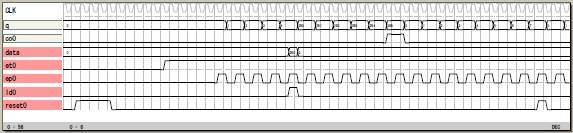

手続きの書き方
その1
手続きの書き方を紹介するために8ビットの計数器を
作ります。

論理譜
手続きにする前の論理譜です。
logicname yahoo29
entity main
input reset;
input ld;
input ep,et;
input data[8];
output co;
output q[8];
bitr nq[8];
if (reset)
nq=0;
else
if (ld)
nq=data;
else
if (ep&et)
nq=nq+1;
else
nq=nq;
endif
endif
endif
if (nq==255) co=1; endif
q=nq;
ende
entity sim
output reset;
output ld;
output ep,et;
output data[8];
output co;
output q[8];
bitr tc[8];
part main(reset,ld,ep,et,data,co,q)
tc=tc+1;
if ((tc<5)|(tc==53)) reset=1; endif
if (tc>10) et=1; endif
if (tc>15)
if (tc.0) ep=1; endif
endif
if (tc==25) ld=1; data=250; endif
ende
endlogic
その2
yahoo29の論理譜を procedure〜endp に書いて手続きに
します。
手続きの論理の出力はひとつの信号に集約します。
この手続きを2回引用して16ビットの計数器を作り
ます。
論理譜
logicname yahoo30
procedure count8bit
input reset;
input ld;
input ep,et;
input data[8];
output q[9];
bitn co;
bitr nq[8];
q.0:7=nq;
q.8=co;
if (reset)
nq=0;
else
if (ld)
nq=data;
else
if (ep&et)
nq=nq+1;
else
nq=nq;
endif
endif
endif
if (nq==255) co=1; endif
endp
entity main
input reset;
input ld;
input ep,et;
input data[16];
output co;
output q[16];
bitn inta[9];
bitn intb[9];
inta=count8bit(reset,ld,ep,1,data.0:7);
intb=count8bit(reset,ld,ep,inta.8,data.8:15);
co=inta.8&intb.8;
q.0:7=inta.0:7;
q.8:15=intb.0:7;
ende
entity sim
output reset;
output ld;
output ep,et;
output data[16];
output co;
output q[16];
bitr tc[8];
part main(reset,ld,ep,et,data,co,q)
tc=tc+1;
if ((tc<5)|(tc==53)) reset=1; endif
if (tc>10) et=1; endif
if (tc>15)
if (tc.0==1) ep=1; endif
endif
if (tc==25) ld=1; data=65530; endif
ende
endlogic
その3
手続きをライブラリ(引用庫)から引用することが
できます。
前回の yahoo30 を y30.l にして
ldc y30 -lib
とすると 手続きが std.lib に追加された new.lib
が作られます。
new.lib を std.lib に名前を変えると新しい手続きを
追加した標準ライブラリとして使えます。
新しいライブラリを作りたいときは new.lib の
name count8bit 〜 endequ
を抽出して新規のファイルを作ります。
例えば usr.lib などとしたときは論理譜の頭で
library usr.lib
と書いておけば count8bit を usr.lib から引用できる
ようになります。
論理譜
logicname yahoo31
library usr.lib
entity main
input reset;
input ld;
input ep,et;
input data[16];
output co;
output q[16];
bitn inta[9];
bitn intb[9];
inta=count8bit(reset,ld,ep,1,data.0:7);
intb=count8bit(reset,ld,ep,inta.8,data.8:15);
co=inta.8&intb.8;
q.0:7=inta.0:7;
q.8:15=intb.0:7;
ende
entity sim
output reset;
output ld;
output ep,et;
output data[16];
output co;
output q[16];
bitr tc[8];
part main(reset,ld,ep,et,data,co,q)
tc=tc+1;
if ((tc<5)|(tc==53)) reset=1; endif
if (tc>10) et=1; endif
if (tc>15)
if (tc.0==1) ep=1; endif
endif
if (tc==25) ld=1; data=65530; endif
ende
endlogic
usr.lib
name count8bit
time 0g
input reset0,ld0,ep0,et0,data0,data1,data2,data3,data4,data5,data6,data7;
infoin 5,1,1,1,1,8;
infoinc 5,0,0,0,0,0;
output q0,q1,q2,q3,q4,q5,q6,q7,q8;
infoout 1,9;
infointr 1,8;
interr _n24,_n25,_n26,_n27,_n28,_n29,_n30,_n31;
infointn 1,14;
intern _n37,_n44,_n45,_n46,_n47,_n48,_n49,_n60,_n63,_n66
,_n69,_n72,_n75,_n78;
equ
q0 = _n24 ;
q1 = _n25 ;
q2 = _n26 ;
q3 = _n27 ;
q4 = _n28 ;
q5 = _n29 ;
q6 = _n30 ;
q7 = _n31 ;
q8 = !_n78 ;
_n24 = data0 & !reset0 & ld0
| !_n24 & !reset0 & !ld0 & ep0 & et0
| _n24 & !reset0 & !ld0 & !_n37 ;
_n25 = data1 & !reset0 & ld0
| !_n25 & !reset0 & !ld0 & _n24 & ep0 & et0
| _n25 & !reset0 & !ld0 & !_n24 & ep0 & et0
| _n25 & !reset0 & !ld0 & !_n37 ;
_n26 = data2 & !reset0 & ld0
| !_n26 & !reset0 & !ld0 & _n25 & _n24 & ep0 & et0
| _n26 & !reset0 & !ld0 & ep0 & et0 & !_n44
| _n26 & !reset0 & !ld0 & !_n37 ;
_n27 = data3 & !reset0 & ld0
| !_n27 & !reset0 & !ld0 & _n26 & _n25 & _n24 & ep0 & et0
| _n27 & !reset0 & !ld0 & ep0 & et0 & !_n45
| _n27 & !reset0 & !ld0 & !_n37 ;
_n28 = data4 & !reset0 & ld0
| !_n28 & !reset0 & !ld0 & _n27 & _n26 & _n25 & _n24 & ep0 & et0
| _n28 & !reset0 & !ld0 & ep0 & et0 & !_n46
| _n28 & !reset0 & !ld0 & !_n37 ;
_n29 = data5 & !reset0 & ld0
| !_n29 & !reset0 & !ld0 & _n28 & _n27 & _n26 & _n25 & _n24 & ep0 & et0
| _n29 & !reset0 & !ld0 & ep0 & et0 & !_n47
| _n29 & !reset0 & !ld0 & !_n37 ;
_n30 = data6 & !reset0 & ld0
| !_n30 & !reset0 & !ld0 & _n29 & _n28 & _n27 & _n26 & _n25 & _n24 & ep0 & et0
| _n30 & !reset0 & !ld0 & ep0 & et0 & !_n48
| _n30 & !reset0 & !ld0 & !_n37 ;
_n31 = data7 & !reset0 & ld0
| !_n31 & !reset0 & !ld0 & _n30 & _n29 & _n28 & _n27 & _n26 & _n25 & _n24 & ep0 & et0
| _n31 & !reset0 & !ld0 & ep0 & et0 & !_n49
| _n31 & !reset0 & !ld0 & !_n37 ;
_n37 = ep0 & et0 ;
_n44 = _n25 & _n24 & !reset0 & !ld0 & ep0 & et0 ;
_n45 = _n26 & _n25 & _n24 & !reset0 & !ld0 & ep0 & et0 ;
_n46 = _n27 & _n26 & _n25 & _n24 & !reset0 & !ld0 & ep0 & et0 ;
_n47 = _n28 & _n27 & _n26 & _n25 & _n24 & !reset0 & !ld0 & ep0 & et0 ;
_n48 = _n29 & _n28 & _n27 & _n26 & _n25 & _n24 & !reset0 & !ld0 & ep0 & et0 ;
_n49 = _n30 & _n29 & _n28 & _n27 & _n26 & _n25 & _n24 & !reset0 & !ld0 & ep0 & et0 ;
_n60 = _n31 & !_n30
| !_n31 ;
_n63 = !_n60 & !_n29
| _n60 ;
_n66 = !_n63 & !_n28
| _n63 ;
_n69 = !_n66 & !_n27
| _n66 ;
_n72 = !_n69 & !_n26
| _n69 ;
_n75 = !_n72 & !_n25
| _n72 ;
_n78 = !_n75 & !_n24
| _n75 ;
endequ
|
|